library("infer") #pipeline workflow for hypothesis testing
library("janitor") #compute proportions easily
library("moderndive") #textbook's package and data
library("patchwork") #easily let's me show graphs side-by-side
library("tidyverse") #the overall programming style universe
# school colors
princeton_orange <- "#E77500"
princeton_black <- "#121212"
# data set: SML 201 demographics survey
demo_df <- readr::read_csv("https://raw.githubusercontent.com/dsollberger/sml201slides/main/posts/04_categories/sml201survey.csv")
# helper function
vnorm <- function(x, mu = 0, sigma = 1, section = "lower"){
# bell curve
x_vals <- seq(mu - 4*sigma, mu + 4*sigma, length.out = 201)
y_vals <- dnorm(x_vals, mu, sigma)
df_for_graph <- data.frame(x_vals, y_vals)
# outline shaded regions
if(length(x) == 1){
shade_left <- rbind(c(x[1],0), df_for_graph |>
filter(x_vals < x[1]))
shade_right <- rbind(c(x[1],0), df_for_graph |>
filter(x_vals > x[1]))
}
if(length(x) == 2){
shade_between <- rbind(c(x[1],0),
df_for_graph |>
filter(x_vals > x[1] &
x_vals < x[2]),
c(x[2],0))
shade_tails <- rbind(df_for_graph |>
filter(x_vals < x[1]),
c(x[1],0),
c(x[2],0),
df_for_graph |>
filter(x_vals > x[2]))
}
if(section == "lower"){
bell_curve <- df_for_graph |>
ggplot(aes(x_vals, y_vals)) +
geom_polygon(aes(x = x_vals, y = y_vals),
data = shade_left,
fill = "#E77500",) +
geom_line(color = "gray50", linewidth = 2)
prob_val <- round(pnorm(x,mu,sigma), 4)
}
if(section == "upper"){
bell_curve <- df_for_graph |>
ggplot(aes(x_vals, y_vals)) +
geom_polygon(aes(x = x_vals, y = y_vals),
data = shade_right,
fill = "#E77500",) +
geom_line(color = "gray50", linewidth = 2)
prob_val <- 1 - round(pnorm(x,mu,sigma), 4)
}
if(section == "between"){
bell_curve <- df_for_graph |>
ggplot(aes(x_vals, y_vals)) +
geom_polygon(aes(x = x_vals, y = y_vals),
data = shade_between,
fill = "#E77500",) +
geom_line(color = "gray50", linewidth = 2)
prob_val <- round(diff(pnorm(x,mu,sigma)), 4)
}
if(section == "tails"){
bell_curve <- df_for_graph |>
ggplot(aes(x_vals, y_vals)) +
geom_polygon(aes(x = x_vals, y = y_vals),
data = shade_tails,
fill = "#E77500",) +
geom_line(color = "gray50", linewidth = 2)
prob_val <- round(1 - diff(pnorm(x,mu,sigma)), 4)
}
# plot bell curve
bell_curve +
labs(subtitle = paste0("Probability: ", prob_val),
caption = "SML 201", y = "") +
theme_minimal()
}SML 201
Libraries and Helper Functions
Start
Goal: Explore hypothesis testing and one-sided tests
Objective: Deploy t-tests and null distributions
Case Study: Job Promotions
- data from a Journal of Applied Psychology study published in 1974
- 48 bank supervisors asked to look at a resume
- identical resume except the name at the top: 24 “female” names and 24 “male” names
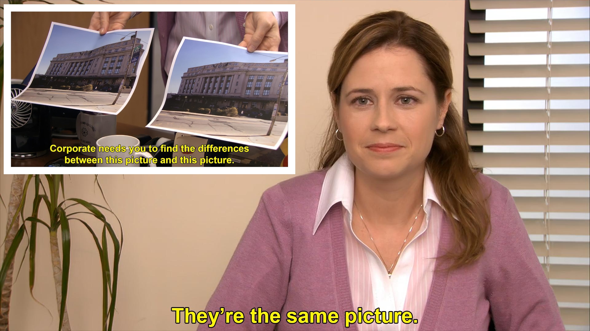
Source: Statistical Inference via Data Science: A Modern Dive into R and the Tidyverse
- Chapter 9: Hypothesis Testing
- https://moderndive.com/9-hypothesis-testing.html
set.seed(20241104)
promotions %>%
sample_n(size = 10) %>%
arrange(id)# A tibble: 10 × 3
id decision gender
<int> <fct> <fct>
1 6 promoted male
2 15 promoted male
3 24 promoted female
4 29 promoted female
5 32 promoted female
6 36 not male
7 39 not female
8 41 not female
9 45 not female
10 46 not femaleStacked Bar Chart
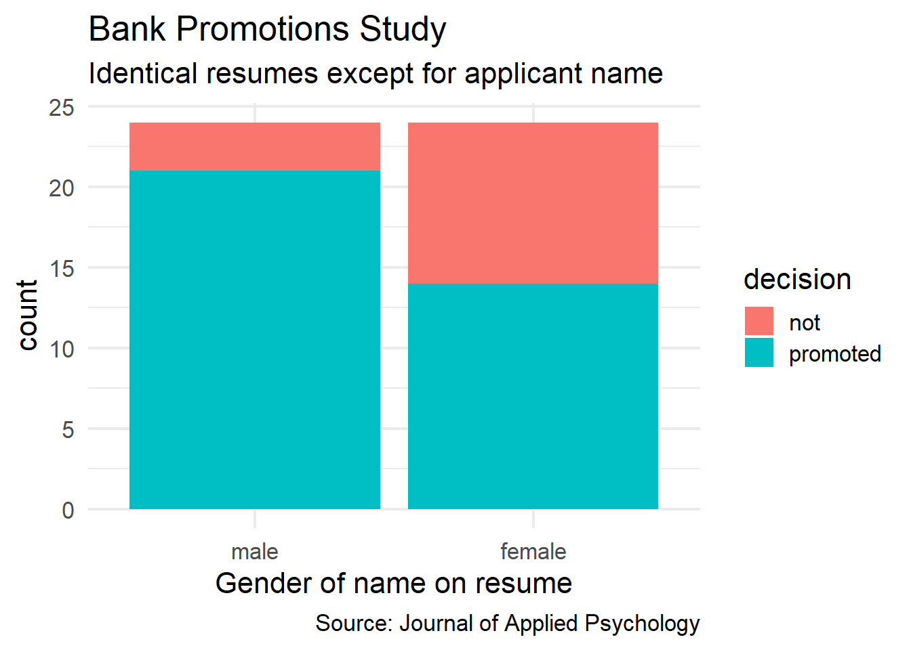
promotions |>
ggplot(aes(x = gender)) +
geom_bar(aes(fill = decision),
stat = "count") +
labs(title = "Bank Promotions Study",
subtitle = "Identical resumes except for applicant name",
caption = "Source: Journal of Applied Psychology",
x = "Gender of name on resume") +
theme_minimal(base_size = 16)Observed Proportions
gender not promoted
male 3 21
female 10 14 gender not promoted
male 12.50% 87.50%
female 41.67% 58.33%promotions |>
tabyl(gender, decision) |>
adorn_percentages("row") |>
adorn_pct_formatting(digits = 2)- male promotion rate: 21/24 = 0.875
- female promotion rate: 14/24 = 0.583
- difference in rates: 0.875 - 0.583 = 0.292
\[\hat{p}_{m} - \hat{p}_{f} = 0.292\]
Permutation Test
Key Observation
If gender did not matter when it comes to these job promotions, then it should not matter if we shuffle the gender labels in the data.
Shuffling
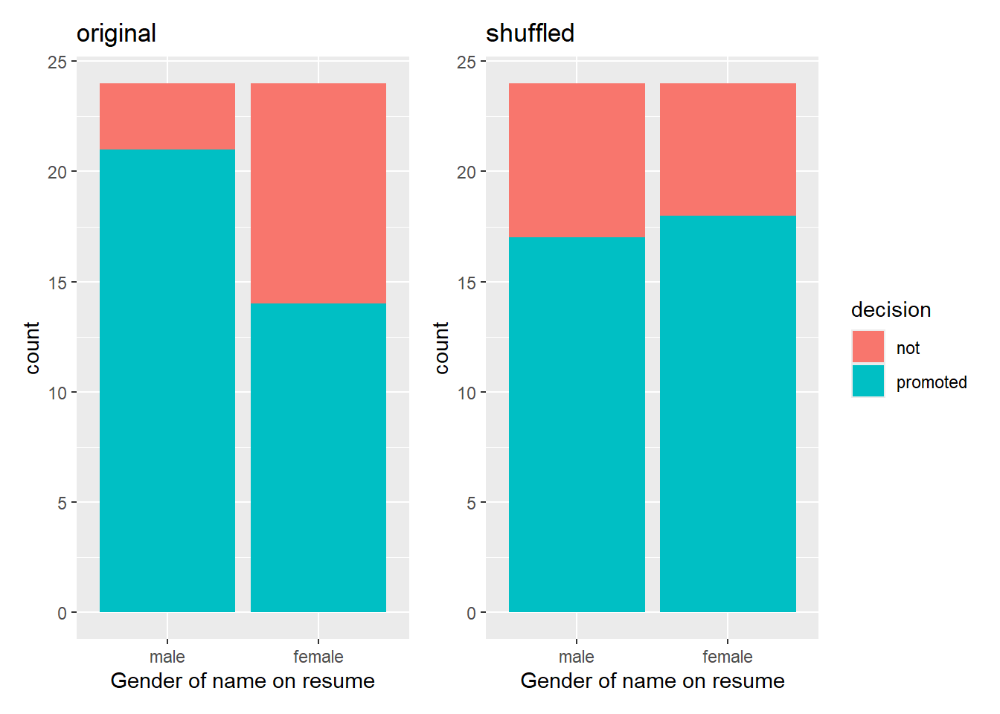
original_bar_graph <- ggplot(promotions, aes(x = gender, fill = decision)) +
geom_bar() +
labs(title = "original",
x = "Gender of name on resume") +
theme(legend.position = "none")
gender_shuffled <- promotions
set.seed(20241104)
gender_shuffled$gender <- sample(promotions$gender)
#sampled without replacement
shuffled_bar_graph <- gender_shuffled %>%
ggplot(aes(x = gender, fill = decision)) +
geom_bar() +
labs(title = "shuffled",
x = "Gender of name on resume")
# patchwork
original_bar_graph + shuffled_bar_graphNHST Concepts
Terminology
- In the previous session, we did a bootstrap method that used sampling with replacement
- Here, we are performing a permutation test that uses sampling without replacement
Hypothesis Test of Proportions
“First, a hypothesis is a statement about the value of an unknown population parameter. In our resume activity, our population parameter is the difference in population proportions \(p_{m} - p_{f}\)”
“Second, a hypothesis test consists of a test between two competing hypotheses … Generally the null hypothesis is a claim that there really is ‘no effect’ or ‘no difference.’” Here our null hypothesis is
- \(H_{0}\): men and women are promoted at the same rate
“Generally the alternative hypothesis is the claim the experimenter or researcher wants to establish or find evidence for and is viewed as a ‘challenger’ hypothesis to the null hypothesis”. Here our alternative hypothesis is
- \(H_{a}\): men are promoted at a higher rate than women
In math symbols, we have
\[\begin{array}{rrcl} H_{o}: p_{m} - p_{f} & = & 0 \\ H_{a}: p_{m} - p_{f} & > & 0 \\ \end{array}\]
“Third, a test statistic is a point estimate/sample statistic formula used for hypothesis testing, where a sample statistic is merely a summary statistic based on a sample of observations.” Here, our test statistic \(\hat{p}_{m} - \hat{p}_{f}\) estimates the parameter of interest: the difference in population proportions \(p_{m} - p_{f}\)
“Fourth, the observed test statistic is the value of the test statistic that we observed in real-life.” In this example the observed difference was
\[\hat{p}_{m} - \hat{p}_{f} = 0.875 - 0.583 = 0.292\]
“Fifth, the null distribution is the sampling distribution of the test statistic assuming the null hypothesis \(H_0\) is true.”
p-value
“The p-value is the probability of obtaining a test statistic just as extreme or more extreme than the observed test statistic assuming the null hypothesis \(H_0\) is true”
Modern NHST (infer)
Null Distribution
null_distribution <- promotions %>%
specify(formula = decision ~ gender, success = "promoted") %>%
hypothesize(null = "independence") %>%
generate(reps = 1000, type = "permute") %>%
calculate(stat = "diff in props", order = c("male", "female"))null_distribution |>
visualize(bins = 10)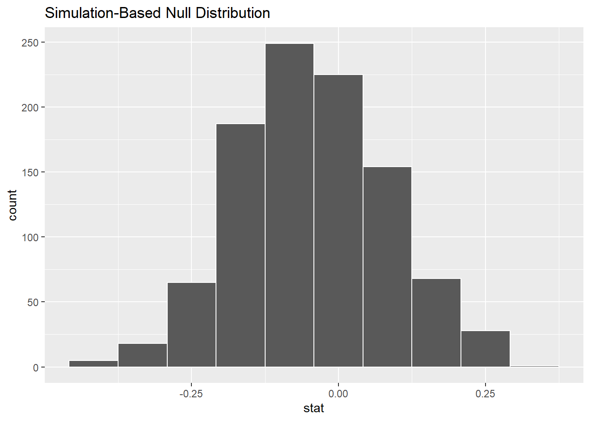
Observed Difference
# observed difference in proportions
obs_diff_prop <- promotions %>%
specify(decision ~ gender, success = "promoted") %>%
calculate(stat = "diff in props", order = c("male", "female"))
#print(obs_diff_prop) #0.292null_distribution |>
visualize(bins = 10) +
# choices for direction are "right", "left", and "both"
shade_p_value(obs_stat = obs_diff_prop,
direction = "right")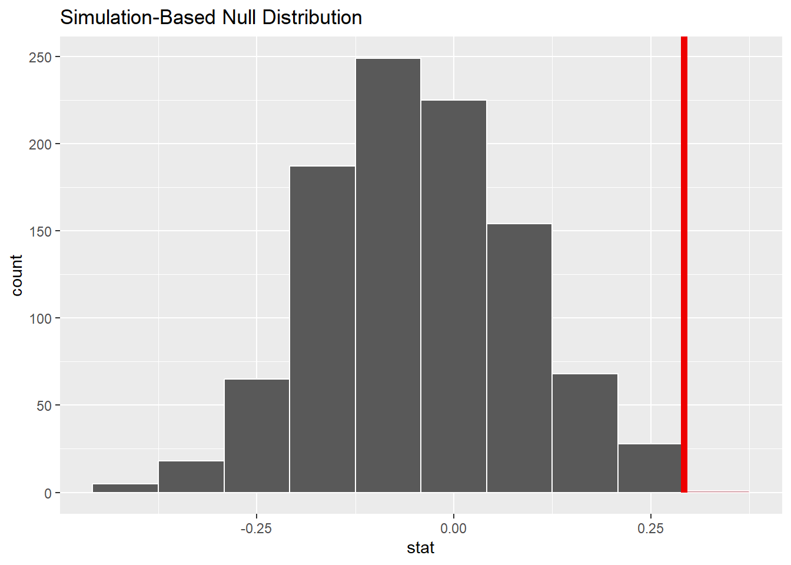
p-value
null_distribution %>%
get_p_value(obs_stat = obs_diff_prop,
direction = "right")# A tibble: 1 × 1
p_value
<dbl>
1 0.029
When p-value < 0.05
For NHST (null hypothesis significance testing), many scientists compare the p-value to a significance level of \(\alpha = 0.05\). Since the p-value < 0.05, we reject the null hypothesis of equal proportions of promotions among men and women.
Review: Confidence Intervals
Data Cleaning
summary(demo_df$SAT) Min. 1st Qu. Median Mean 3rd Qu. Max. NA's
0 1500 1540 1617 1560 15560 24 SAT_df <- demo_df |>
select(SAT) |>
filter(SAT >= 400 & SAT <= 1600)summary(SAT_df$SAT) Min. 1st Qu. Median Mean 3rd Qu. Max.
1100 1500 1540 1516 1560 1600 # observed sample mean: xbar = 1516Bootstrap Method
set.seed(20241104)
bootstrap_distribution <- SAT_df |>
specify(response = SAT) |>
generate(reps = 1000, type = "bootstrap") |>
calculate(stat = "mean")bootstrap_distribution |>
visualize() +
shade_ci(endpoints = bootstrap_distribution |>
get_ci(level = 0.95))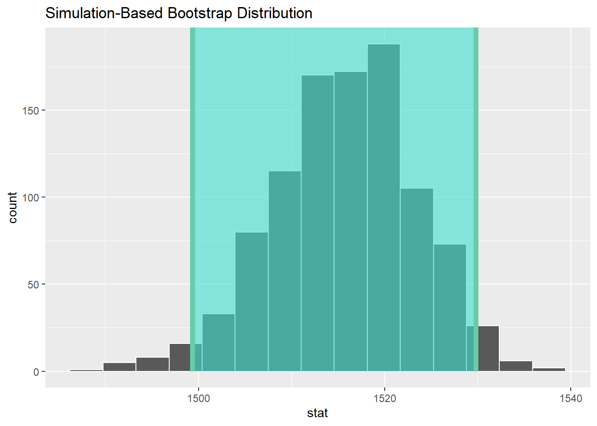
bootstrap_distribution |> get_ci(level = 0.95)# A tibble: 1 × 2
lower_ci upper_ci
<dbl> <dbl>
1 1499. 1530.We are 95 percent confident that the true average SAT score for a Princeton student is in between 1499 and 1530.
Old NHST (t-test)
Design
- Colloquially: The average SAT score for a Princeton student is above 1510.
- Null hypothesis: The average SAT score for a Princeton student is 1510.
- Alternative hypothesis: The average SAT score for a Princeton student is above 1510.
\[H_{0}: \mu = 1510\] \[H_{a}: \mu > 1510\]
Boxplot
Usually, the middle line in a boxplot corresponds to the sample median.
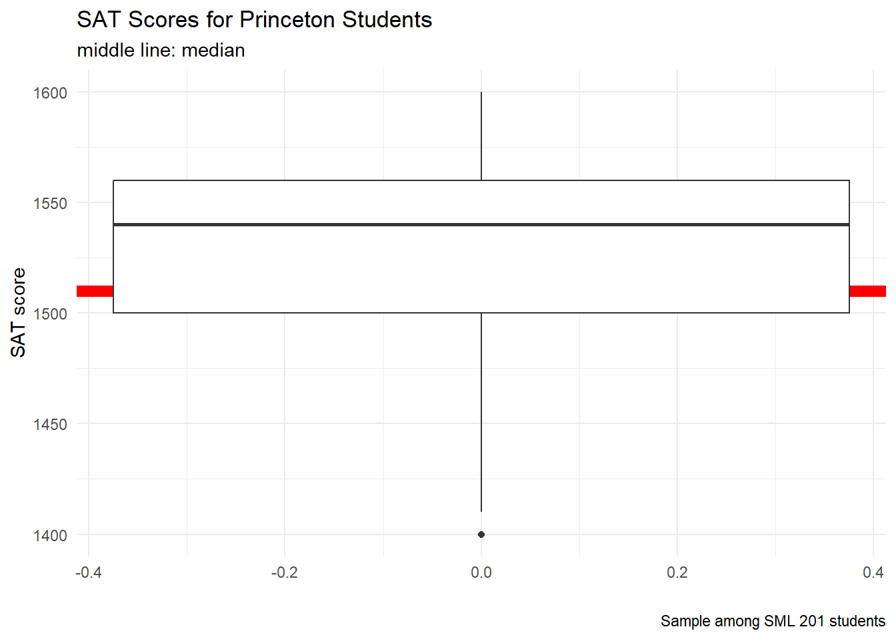
There is an option to change the middle line in a boxplot to refer to the sample mean (but this is rarely done in practice)
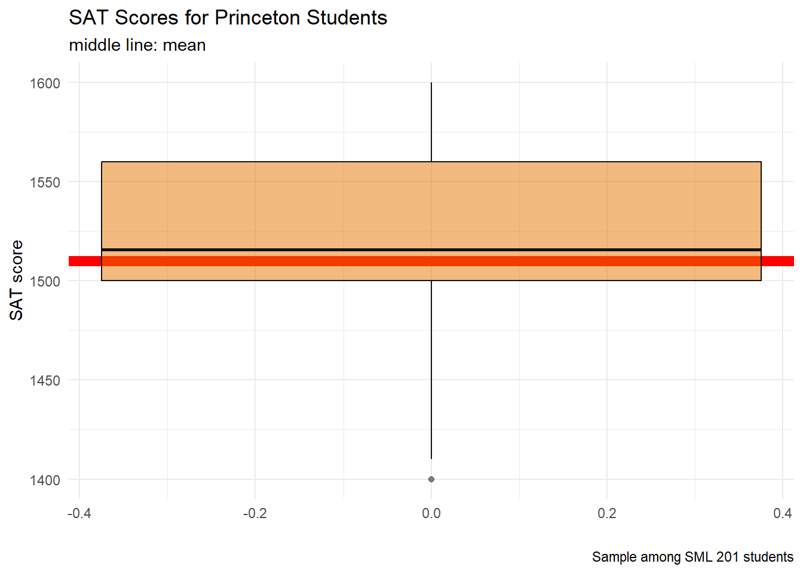
SAT_df |>
ggplot() +
geom_hline(yintercept = 1510, color = "red", linewidth = 3) +
geom_boxplot(aes(y = SAT),
middle = mean(SAT_df$SAT),
alpha = 0.5,
color = princeton_black,
fill = princeton_orange) +
labs(title = "SAT Scores for Princeton Students",
subtitle = "middle line: mean",
caption = "Sample among SML 201 students",
x = "", y = "SAT score") +
scale_y_continuous(limits = c(1400, 1600)) +
theme_minimal()t statistic
\[t = \frac{\bar{x} - \mu}{\frac{s}{\sqrt{n}}}\]
n <- sum(!is.na(SAT_df$SAT))
xbar <- mean(SAT_df$SAT, na.rm = TRUE)
s <- sd(SAT_df$SAT, na.rm = TRUE)
mu <- 1510
t_stat <- (xbar - mu) / (s/sqrt(n))Critical Region
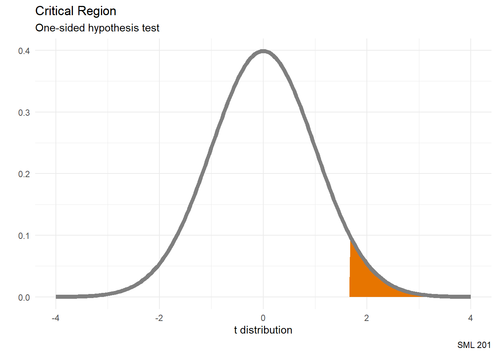
# significance level: alpha = 0.05 ==> top 5 percentile
# df: degrees of freedom
crit_value <- qt(0.95, df = n-1)
vnorm(crit_value, section = "upper") +
labs(title = "Critical Region",
subtitle = "One-sided hypothesis test",
caption = "SML 201",
x = "t distribution")
Normal Distribution Uusage
We used the normal distribution here in this example since
- \(n > 30\)
- The Central Limit Theorem said that sample distributions of the mean converge toward the normal distribution
- Teacher Derek didn’t have a t-distribution analogue for the
vnormhelper function at this time.
Comparison
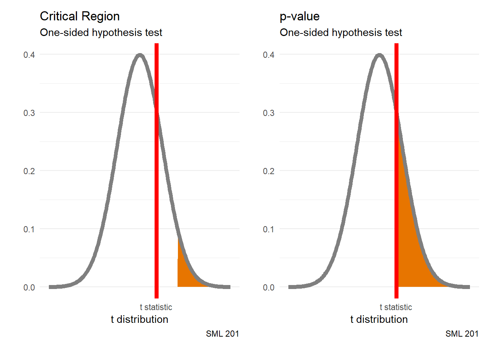
Critical Region
That is, in order to reject the null hypothesis, we wanted the \(t\) statistic to be inside of the critical region.
p1 <- vnorm(crit_value, section = "upper") +
geom_vline(aes(xintercept = t_stat),
color = "red", linewidth = 2) +
labs(title = "Critical Region",
subtitle = "One-sided hypothesis test",
caption = "SML 201",
x = "t distribution") +
scale_x_continuous(breaks = t_stat,
labels = "t statistic")
p2 <- vnorm(t_stat, section = "upper") +
geom_vline(aes(xintercept = t_stat),
color = "red", linewidth = 2) +
labs(title = "p-value",
subtitle = "One-sided hypothesis test",
caption = "SML 201",
x = "t distribution") +
scale_x_continuous(breaks = t_stat,
labels = "t statistic")
# patchwork
p1 + p2t.test
t.test(SAT_df$SAT, mu = 1510, alterative = "greater")
One Sample t-test
data: SAT_df$SAT
t = 0.74335, df = 105, p-value = 0.4589
alternative hypothesis: true mean is not equal to 1510
95 percent confidence interval:
1500.719 1530.413
sample estimates:
mean of x
1515.566
When p-value > 0.05
For NHST (null hypothesis significance testing), many scientists compare the p-value to a significance level of \(\alpha = 0.05\). Since the p-value > 0.05, we fail to reject the null hypothesis that the average SAT score of Princeton students is 1510.
Leaving the t distribution behind
For these calculations
\[t = \frac{\bar{x} - \mu}{\frac{s}{\sqrt{n}}}\]
- rely more on summary statistics rather than all of the gathered data
- “degrees of freedom” is a rather convoluted notion
- t-distribution is itself an approximation
- leads to more reliance on abstract probability distributions
- departs from frequentist probability philosophy
- more useful before calculators and computers
Modern NHST (infer)
Design
- Colloquially: The average SAT score for a Princeton student is above 1500.
- Null hypothesis: The average SAT score for a Princeton student is at most 1500.
- Alternative hypothesis: The average SAT score for a Princeton student is above 1500.
\[H_{0}: \mu \leq 1500\] \[H_{a}: \mu > 1500\]
Bootstrap Distribution
For one-sided hypothesis tests, we still employ a bootstrap distribution.
bootstrap_distribution <- SAT_df |>
specify(response = SAT) |>
hypothesize(null = "point", mu = 1500) |>
generate(reps = 1000, type = "bootstrap") |>
calculate(stat = "mean")Observed Stat
obs_mean <- SAT_df |>
specify(response = SAT) |>
# hypothesize(null = "point", mu = 40) |>
# generate(reps = 1000, type = "bootstrap") |>
calculate(stat = "mean")p-value
bootstrap_distribution |>
visualize() +
shade_p_value(obs_mean, direction = "right")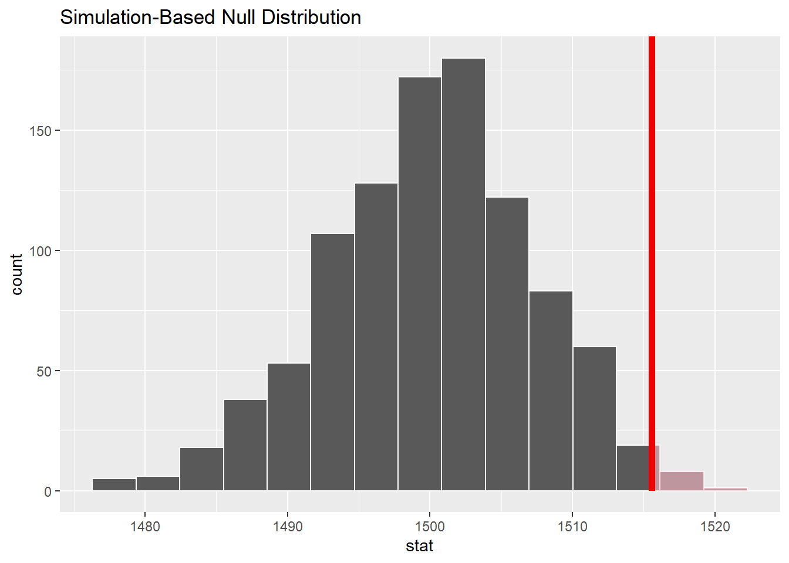
bootstrap_distribution |>
get_p_value(obs_mean, direction = "right")# A tibble: 1 × 1
p_value
<dbl>
1 0.012
When p-value < 0.05
Since the p-value < 0.05, we reject the null hypothesis that the average SAT score of Princeton students is at most 1500.
Inequalities in the Null Hypothesis
\[H_{0}: \mu \leq 1500\] \[H_{a}: \mu > 1500\]
Writing null hypotheses with inequalities (\(\leq\) or \(\geq\)() instead of an equals sign (=) is a relatively recent trend in textbooks. Let is explore why we are doing this.
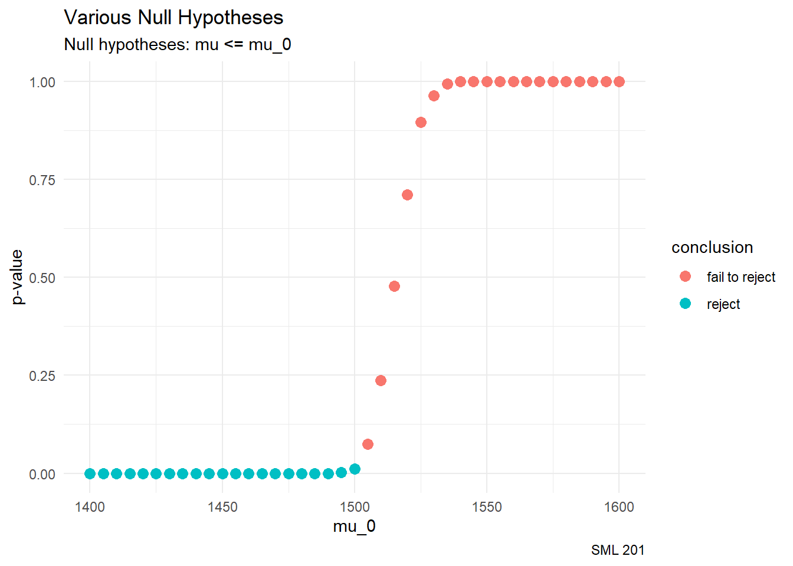
mu_vals <- seq(1400, 1600, by = 5)
N <- length(mu_vals)
p_vals <- rep(NA, N)
obs_mean <- SAT_df |>
specify(response = SAT) |>
calculate(stat = "mean")
for(i in 1:N){
p_vals[i] <- SAT_df |>
specify(response = SAT) |>
hypothesize(null = "point", mu = mu_vals[i]) |>
generate(reps = 1000, type = "bootstrap") |>
calculate(stat = "mean") |>
get_p_value(obs_mean, direction = "greater") |>
pull()
}
df_for_graph <- data.frame(mu_vals, p_vals)
df_for_graph |>
mutate(conclusion = ifelse(p_vals < 0.05,
"reject", "fail to reject")) |>
ggplot() +
geom_point(aes(x = mu_vals, y = p_vals, color = conclusion),
size = 3) +
labs(title = "Various Null Hypotheses",
subtitle = "Null hypotheses: mu <= mu_0",
caption = "SML 201",
x = "mu_0", y = "p-value") +
theme_minimal()Quo Vadimus?
- Precept 8
- Historical Case Studies and Ethics
- Project 3 (assigned Nov 11)
- Exam 2 (December 5)
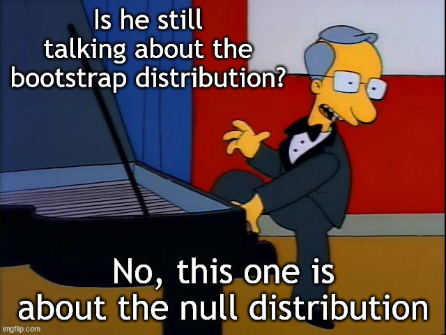
- image source: The Simpsons
Footnotes
(optional) Additional Resources
Session Info
sessionInfo()R version 4.4.1 (2024-06-14 ucrt)
Platform: x86_64-w64-mingw32/x64
Running under: Windows 10 x64 (build 19045)
Matrix products: default
locale:
[1] LC_COLLATE=English_United States.utf8
[2] LC_CTYPE=English_United States.utf8
[3] LC_MONETARY=English_United States.utf8
[4] LC_NUMERIC=C
[5] LC_TIME=English_United States.utf8
time zone: America/New_York
tzcode source: internal
attached base packages:
[1] stats graphics grDevices utils datasets methods base
other attached packages:
[1] lubridate_1.9.3 forcats_1.0.0 stringr_1.5.1 dplyr_1.1.4
[5] purrr_1.0.2 readr_2.1.5 tidyr_1.3.1 tibble_3.2.1
[9] ggplot2_3.5.1 tidyverse_2.0.0 patchwork_1.3.0 moderndive_0.7.0
[13] janitor_2.2.0 infer_1.0.7
loaded via a namespace (and not attached):
[1] utf8_1.2.4 generics_0.1.3 stringi_1.8.4
[4] hms_1.1.3 digest_0.6.35 magrittr_2.0.3
[7] evaluate_1.0.1 grid_4.4.1 timechange_0.3.0
[10] fastmap_1.2.0 operator.tools_1.6.3 jsonlite_1.8.8
[13] backports_1.5.0 fansi_1.0.6 scales_1.3.0
[16] cli_3.6.3 crayon_1.5.3 rlang_1.1.4
[19] bit64_4.5.2 munsell_0.5.1 withr_3.0.2
[22] yaml_2.3.8 parallel_4.4.1 tools_4.4.1
[25] tzdb_0.4.0 colorspace_2.1-1 curl_5.2.3
[28] broom_1.0.7 vctrs_0.6.5 R6_2.5.1
[31] lifecycle_1.0.4 snakecase_0.11.1 bit_4.5.0
[34] htmlwidgets_1.6.4 vroom_1.6.5 pkgconfig_2.0.3
[37] pillar_1.9.0 gtable_0.3.5 glue_1.8.0
[40] xfun_0.48 tidyselect_1.2.1 rstudioapi_0.17.0
[43] knitr_1.48 farver_2.1.2 htmltools_0.5.8.1
[46] labeling_0.4.3 rmarkdown_2.28 formula.tools_1.7.1
[49] compiler_4.4.1
Example Callout Block
note, tip, warning, caution, or important